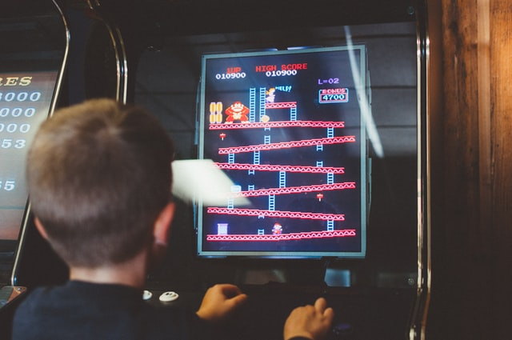

¡Participamos en la feria de videojuegos!

Para ello, vamos a iniciarnos en este apasionante mundo y verás que cuando termines este reto serás capaz de crear tu propio videojuego. Para ello te mostraremos paso a paso cómo se programan un videojuego con Scratch y así podrás participar en la feria.
¿Te animas a programar el tuyo?
Un recorrido histórico por los videojuegos
Vamos a ver una muestra de algunos de los videojuegos más populares a lo largo de la historia.
¡Seguro que conoces alguno y te trae buenos recuerdos!
¿Te gustaría hacer alguno parecido a estos?
Historia de los videojuegos (1972-1983)
Historia de los videojuegos (1983-1994)
Historia de los videojuegos (1994-1998)
Audio
Ayuda de audio para el video: Del Pong a la realidad virtual (página 1 del carrusel)
¿Cómo lo han hecho?
Reflexiona sobre lo que has visto, escuchado y sentido con estos vídeos.
- ¿Alguna vez te has planteado cómo se crean los videojuegos?, ¿cómo crees que se hacen? y, ¿cuántas personas y qué perfiles profesionales crees que participan en la creación de un videojuego?
- ¿Sabías que con Scratch puedes hacer tus propios videojuegos? ¿Alguna vez has hecho alguno? Si es así, comparte tu experiencia con tus compañeras y compañeros.
- ¿Te sientes capaz de hacer uno para participar en la feria regional? Claro que sí, con un poco de atención y dedicación, seguro que lo consigues.
¿Qué vas a aprender mientras creas el videojuego?
- Qué es un videojuego y qué características tienen para ser atractivos.
- Cómo funcionan y cómo usar Scratch para crearlos.
- Qué elementos tiene un videojuego y cuáles contribuyen en hacerlo más atractivo.
- La importancia de las variables en los videojuegos.
- Las diversas tareas y funciones que hay que realizar para crearlos.
- A integrar un equipo de trabajo, para realizar de forma cooperativa un videojuego.